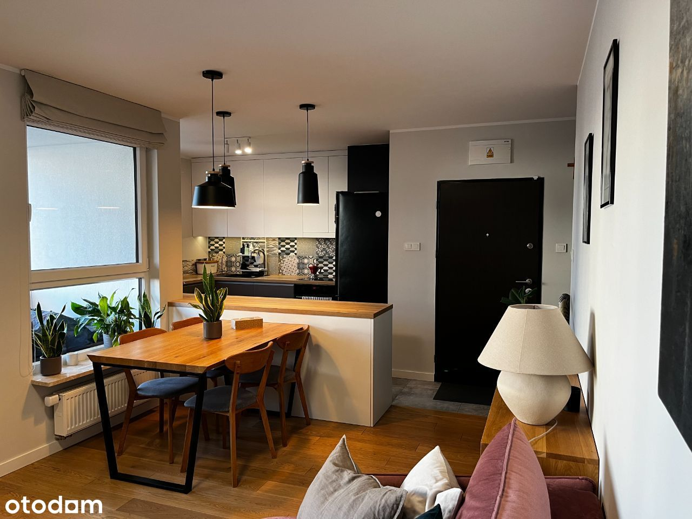
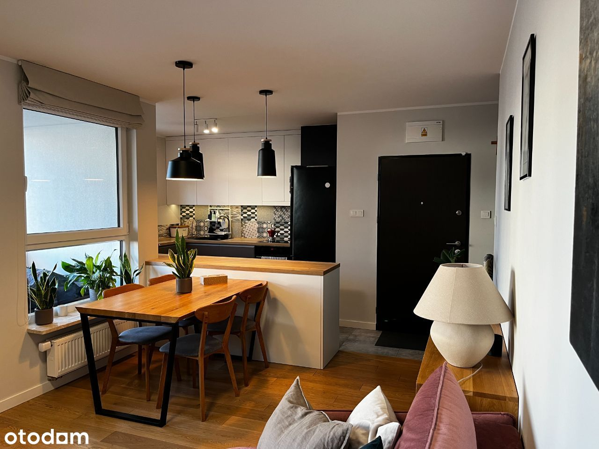

Agencjom nieruchomości dziękujemy - proszę nie dzwonić.
Bezpośrednio: trzypokojowe mieszkanie w bloku z 2019 roku na cichym i spokojnym osiedlu Wilno, na warszawskim Zaciszu. Idealne dla rodziny, miejsce do pracy bądź pod inwestycję, z uwagi na idealne połączenia komunikacyjne z centrum Warszawy (20 min. do Centrum komunikacją miejską, 15 min. samochodem).
O OSIEDLU: Osiedle podzielone na niezależne etapy, bardzo ciche, zadbane (mnóstwo wypielęgnowanej zieleni), etapy zamknięte, monitorowane z ochroną 24/7. Plac zabaw na terenie zamkniętym. W pobliżu (800m) 2 duże place zabaw z siłownią plenerową. Wózkownie, stojaki na rowery. Etap posiada zamknięty podziemny parking wewnętrzny. Na terenie osiedla wybudowana przez dewelopera stacja kolejowa - 4 min. pociągiem do Dworca Wileńskiego oraz metra. Wysoki standard wykończenia - całe osiedle wybudowane przez Dom Development. Potocznie jest nazywane „małym Wilanowem”, bo jego rozkład jest spójny i bardzo przemyślany. Zdecydowanie to miejsce dla osób, które cenią ciszę, zieleń, ale też dobre połączenia komunikacyjne z Centrum.
O MIESZKANIU: 69 m2, II piętro, dwa oddzielne pokoje + salon z kuchnią i wyjście na balkon / loggia. Mieszkanie bardzo dobrze izolowane, wewnętrzne (niskie koszty ogrzewania), przestronne i jasne, oddalone od ulicy. Mimo bliskości podmiejskiej linii kolejowej, ruch pociągów jest praktycznie niesłyszalny i nie wpływa na komfort mieszkania (pociągi nie jeżdżą w porze nocnej, w weekendy co 30 min., w ciągu dnia co 20 min., bo to kolej dojazdowa).Do mieszkania przynależą 2 miejsca postojowe w hali garażowej podziemnej, położone obok siebie, blisko wejścia do klatki schodowej. Miejsca dodatkowo płatne - 35.000zł każde.
STAN PRAWNY: odrębna własność z księgą wieczystą - bez obciążeń. Możliwość kredytowania, jak i elastycznej spłaty.
DOSTĘPNOŚĆ: od 1 lipca 2024
ZALETY:
SALON Z KUCHNIĄ - 27,0 M2 (wystawa południowo-wschodnia): Kuchnia przestronna, jasna, zaprojektowana przez projektanta i zrobiona na wymiar z wysokiej jakości materiałów, zapewniająca bardzo dużo miejsca do przechowywania. W szafkach użyto system Blum, blat drewnopodobny produkcji włoskiej. Sprzęty AGD energooszczędne: lodówka, płyta indukcyjna, piekarnik, zmywarka w idealnym stanie (producent Amica, LG). Zlewozmywak firmy Schock, z baterią z ruchomą głowicą firmy Franke. Salon ustawny, zapewniający przestrzeń jadalną i wypoczynkową, z wyjściem na przestronny balkon typu loggia.
POKÓJ DZIECIĘCY / BIURO - 10,5 m2: (wystawa północno-zachodnia): Pokój bardzo ustawny, w kształcie kwadratu. Szafa zaprojektowana i wykonana na wymiar z szufladami, z wysokiej jakości płyty. Pokój mocno doświetlony z uwagi na duże okna - idealny do pracy i zabawy w ciągu dnia.
SYPIALNIA - 10,9 m2: (wystawa północno-zachodnia): Sypialnia bardzo ustawna, bez problemu mieści łóżko 160 x 200, z zapewnionym dostępem z obu stron. Podwójna szafa zaprojektowana i wykonana na wymiar, z wysokiej jakości materiałów, wyposażona w szuflady.
ŁAZIENKA - 5,2 M2: Wyposażona w wannę z parawanem firmy Radaway (z powłoką zabezpieczającą przed kamieniem). Armatura firmy Grohe.
PRALNIA - 2,5 M2: Pomieszczenie pełniące funkcję pralni oraz spiżarni. Wyposażone w pralkę i suszarkę firmy SAMSUNG oraz zamknięty pawlacz do przechowywania pościeli. Dodatkowo zaprojektowane i wykonane na wymiar półki o różnej wysokości i układzie, zapewniające możliwość przechowywania zarówno ubrań, butów, środków czystości czy dokumentów. Pomieszczenie pierwotnie miało pełnić funkcję WC z prysznicem, więc jest wyposażone w niezbędne przyłącza. Zatem możliwe jest jego szybkie przerobienie na dodatkową łazienkę.
HOL - 10,0 M2: W kształcie litery L, zapewniający podział mieszkania na część dzienną, ogólnodostępną i część wypoczynkową, z dala od drzwi wejściowych. W przedpokoju zaprojektowana i wykonana na wymiar szafa z szufladami, a także wieszak i półka IKEA na obuwie. Lustro.
LOGGIA - 7,0 M2: Dostępna z wejścia z salonu, w kształcie prostokąta na całej długości salonu. Ustawna (np. mieści system NÄMMARÖ z Ikea). Rano idealnie doświetlona na poranną kawę czy śniadanie, popołudniu osłonięta od upałów. Bardzo cicha, od wnętrza osiedla, z dala od placu zabaw.
NA TERENIE OSIEDLA W PROMIENIU 300M:
Infrastruktura: 2 paczkomaty, przystanki autobusowe, stacja Warszawa Wilno-Zacisze,
Lokale usługowe: 4 salony kosmetyczne, 2 zakłady fryzjerskie, barber, przychodnia NFZ i prywatna (punkt pobrań), 2 kliniki stomatologiczne, klinika weterynaryjna, placówka pocztowa, 2 apteki, cukiernie, lodziarnie, kwiaciarnia,
Nauka: szkoła języka angielskiego, szkoła języka hiszpańskiego, przedszkole publiczne i prywatne, żłobek,
Sklepy: Rossmann, Pepco, Gilda, Delikatesy, 2 warzywniaki, 2 Żabki, Duży Ben, piekarnia rzemieślnicza PAJDA, Galeria Wypieków, Putka,
Restauracje: 2 sushi bary, 2 pizzerie, hamburgerownia, chińczyk,
W ZASIĘGU SPACERU: Biedronka, klub sportowo-tenisowy Kangur, zalew Bardowskiego,
KILKA MINUT DOJAZDU: Obi, Lidl, Kaufland, Biedronka, Makro, Ikea (M1)Bardzo szybki dojazd do trasy S8 - wylot na Białystok
Przystanki autobusowe: 156, 356, 170, 262 (połączenie z metrem Trocka, Dworcem Wschodnim i Dworcem Wileńskim)
Zapraszamy do oglądania!

 
